| Approach | Coverage and input data | Outputs and availability | License |
|---|---|---|---|
| Bicycle share model, Parkin, J. et al. (2007) | England and Wales, Journeys to work OD census data, at the small-area (wards) level | Static tables in academic paper | Proprietary |
| Analysis of Cycling Potential (ACP), Transport for London (2010 and 2016) | London, London Travel Demand Survey | Static tables, graphs, and heatmaps, not publicly available | Proprietary |
| Bikeability index/Bike Score, Winters, M. et al. (2013 and 2016) | Metro Vancouver region/160 US and Canadian cities, Cycling infrastructure, topography, destinations and road connectivity data | Map-based heatmap, not publicly available | Proprietary |
| Prioritization index, Larsen, J. et al. (2013) | Montreal, Survey, Road safety, and OD data | Map-based heatmap, not publicly available | Proprietary |
| Usage intensity index, Zhang, D. et al. (2014) | Belo Horizonte, Survey, census, and OD data | Static tables and maps, not publicly available | Proprietary |
| The Cycling Potential Tool (CPT), Phillips, L., & Range, A. (2017) | Scotland, Environmental and socioeconomic data, at the small area (output areas) level | Maps showing cycling potential in each area | Proprietary |
| Propensity to Cycle Tool (PCT), Lovelace, R. et al. (2017) | England and Wales, Journeys to work and school OD census data, at the small area (LSOA) level | Online maps, graphs, tables, publicly available at www.pct.bike | Open source |
| Cyclist Routing Algorithm for Network Connectivity (CRANC), Gehrke, S. R. et al. (2020) | Boston region, Road segment characteristics, elevation, and destination acessibility data, at the census blocks level | Graphs and heatmaps, not publicly available | NA |
| The Gross Potential for Cycling tool (CPC), Silva, C. et al. (2021 and 2022) and Lopez et al. (2021) | 21 Portuguese cities, Land use and socio-demographic data, at the small area (census tract) level | Static maps showing cycling potential in different areas | NA |
| The relative equity impact of bicycle planning (TIRE), Cunha, I., & Silva, C. (2023) | Lisbon, Cycling infrastructure, topography, and location of points of interest data, at the hexagon cells level | Graphs and heatmaps, not publicly available | NA |
Cycle Route Uptake and Scenario Estimation (CRUSE): an approach for developing strategic cycle network planning tools
Abstract
This paper describes an approach for developing strategic cycle network planning tools. Based on our experience developing and deploying the Cycle Route Uptake and Scenario Estimation (CRUSE) Tool for Ireland, we outline the underlying methods, including disaggregation of origin-destination data with the open source ‘odjitter’ software, incorporation of additional trip purposes, routing, scenario generation, and development of an intuitive user interface that is tested and used by practitioners. Commissioned by the national infrastructure agency Transport Infrastructure Ireland, CRUSE provides estimates of current and potential future cycling levels under ‘snapshot’ scenarios to inform investment decisions. The publicly available results at https://cruse.bike/ enable planners, engineers, and other stakeholders to make more evidence-based decisions. CRUSE goes beyond previous work by: modeling networks at high spatial resolution; simulating multiple trip purposes (social, shopping, personal utility, recreational, and cycle touring), supplementing official origin-destination datasets on travel for work and education; and providing estimates of ‘quietness’ (a proxy for cyclist comfort and route preference) at the route segment level. Three network types — ‘Fastest’, ‘Balanced’, and ‘Quietest’ — help plan both arterial and residential cycle networks. Workshops with stakeholders were used to inform the development of the tool. Feedback shows that the tool has a wide range of uses and is already being used in practice to inform urban, inter-urban, and rural cycle network designs. The approach is flexible and open-source, allowing the underlying ideas and code to be adapted, supporting more evidence-based and effective cycling policies and interventions internationally.
Keywords
Cycling, Open-source, Road Safety, Active Travel, Transport Planning, Collaborative Planning
1 Introduction
1.1 Background
Transport systems dominated by heavy and powerful private cars are inefficient, dangerous, and unhealthy. Cars are a major and growing source of greenhouse gas (GHG) emissions (Winkler et al., 2023), a leading cause of premature death and injury due to road traffic collisions (Global Status Report On Road Safety 2018, 2018), and a cause of disease due to physical inactivity and air, noise and microplastic pollution (Mattsson et al., 2023) (Welch et al., 2023) (Cavallaro & Nocera, 2024). Transport is responsible for 23% of GHG emissions, 70% of which are from road transport, with passenger cars accounting for nearly half of transport emissions (around 10% of global emissions) (Jaramillo et al., 2022). The transport system encourages, enables and in some cases enforces unsustainable lifestyles. Services that are only accessible by car lock-in car dependency (Gray et al., 2001; Motte-baumvol et al., 2010; Shergold et al., 2012).
Growing evidence of the negative impacts of car-dependent transport systems has led governments in many countries to set targets and take actions. In the context of climate, road safety and physicial inactivity crises, policies to improve transport systems can be classified according to the ‘Avoid-Shift-Improve’ (ASI) framework (Jaramillo et al., 2022). The ASI framework highlights the importance of demand reduction (avoiding unnecessary trips), in addition to mode shift to sustainable modes and improvement of existing energy converters, in that order.
Building cycle networks represents a relatively ‘quick win’ within the context of decarbonization (Brand et al., 2020) and sustainable mobility (Burns, 2013). Although cycling uptake appears on the surface to only relate to the ‘shift’ part of the ASI framework, closer consideration of the knock-on impacts of cycling uptake shows that it can also help avoid unnecessary trips (Nello-Deakin, 2020). Furthermore, highly efficient ebikes — which are seeing rapid uptake — outperform electric cars, which are too heavy and expensive, for the majority of trips. Over-reliance on electric cars could slow the transition away from car dependency and inadvertently enable “high travel lock-in” (Anable & Goodwin, 2019). At the European level, the European Union has a target of reducing GHG emissions by 55% by 2030, compared to 1990 levels, and to achieve ‘net-zero’ by 2050 (Rosenow, 2022). Climate change mitigation is a major motivation for cycle network plans (Scappini et al., 2022).
Another motivation for cycle network planning at the European level is the Road Infrastructure Safety Management (RISM) directive (2008/96/EC), which requires member states to implement a road safety management system (RSMS) for all public roads. Specifically, “Member States shall ensure that the ranking of high accident concentration sections and the network safety ranking are carried out” (Directive 2008/96/EC of the European Parliament and of the Council of 19 November 2008 on Road Infrastructure Safety Management, 2008). Given that ‘safety’ in this context is usefully quantified as the number of people killed or seriously injured (KSI) per distance traveled, the directive requires estimation of distance traveled by mode, down to the road link level. For active modes, about which there is a paucity of data compared with motorized modes, this is a major challenge. Better data to inform road safety policies and interventions is a motivation for better estimates of ‘baseline’ levels of physical activity at high geographic resolutions (Tait et al., 2023).
National governments are increasingly acting on the evidence. In Ireland, the Road Safety Authority (RSA) has set the target of halving the number of road traffic deaths and serious injuries by 2030 (National Development Plan 2021-2030, 2021). Doing so while simultaneously enabling rapid uptake of active modes will require key travel corridors to be identified and ‘cycle proofed’. Cycling in Ireland represents only 3% of total modal share as of the 2016 Census, but accounts for 20% of serious injuries and 7% of all fatalities. Poor perception of safety has been found to represent the most important barrier to increased cycling in Ireland(Brick & Swift, 2018), and the need to improve road safety drives the development of national cycling policy and infrastructure plans. The main frameworks underpinning these efforts are the Climate Action Plan (Climate Action Plan 2023, 2022), the National Development Plan, and the National Roads 2040 strategy (National Roads 2040, 2023).
At the regional level within Ireland, the recently published Greater Dublin Area Transport Strategy (Greater Dublin Area Transport Strategy, n.d.) reveals the high support for and capability for cycling: “nearly a quarter of adults cycle at least once a week in the Dublin Metropolitan Area” with cycling in the Dublin area taking up to 60,000 cars off the road today. Extrapolating this on a per population basis across Ireland, with around 40% of the population living in Dublin, suggests that around 150,000 cars could be removed nationwide just by achieving Dublin levels of cycling in all counties (notwithstanding existing cycling trips and differences in trip distances). Seven in ten trips in Ireland are by car (National Travel Survey 2017, n.d.). Cycling has the potential to replace a large proportion of these trips: “A high priority must also be given to cyclists, because trips by this mode have the potential to replace trips by private car, most specifically for short to medium distance trips, but increasingly for longer trips as ebikes extend the range of this mode” (Greater Dublin Area Transport Strategy, n.d.).
Further evidence of the importance of cycling in Ireland is provided by the National Strategic Objective (NSO) from the National Development Plan, which allocates €8.6 billion to sustainable transport infrastructure including public transport and active travel interventions. Cycle infrastructure will be developed in synchrony with the BusConnects project, an entire redesign of the bus network in Dublin and Cork. It was in this context that Transport Infrastructure Ireland (TII) commissioned the research reported in this paper, which led to the Cycle Route Uptake and Scenario Estimation (CRUSE) Tool for Ireland. Building on previous work, including the Propensity to Cycle Tool (PCT) for England and Wales, the CRUSE Tool was developed to provide evidence on current cycling levels and future cycling potential nationwide across Ireland.
Stakeholder consultation by TII emphasized the need for a strong, national, systematic but locally-specific evidence base on cycle networks in both urban and rural Ireland. The evidence base had to scale nationally to support strategic alignment with national, regional and local policies, but also be useful for local network planning.
1.2 Aim and content
This paper describes an approach to strategic cycle network planning tool development that is open, scalable, and evidence-based. We label the approach Cycle Route Uptake and Scenario Estimation (CRUSE) and present a case study of its application in Ireland, the results of which are publicly available at cruse.bike.
In Section 2, we review existing current tools for estimating cycling potential. In Section 3, we outline the methods used to generate the evidence presented in the CRUSE Tool. In Section 4, we present the results of the CRUSE Tool, including estimates of current cycling levels and future cycling potential at the national, regional and local levels. In Section 5, we discuss limitations and possible future improvements to the approach, and the implications of the results for Ireland before making concluding remarks in Section 6.
2 Tools for estimating cycling potential
Tools for estimating geographical distribution of cycling potential have advanced substantially in recent years. Developed by researchers and developers in academic, public and private sectors, they have evolved from simple area-based static models tailored to specific regions to more complex and (in some cases) more generalizable tools. These tools can be considered as a specific application of the concept of planning support systems (PSS), which are designed to help planners and decision-makers in making better-informed decisions (Geertman & Stillwell, 2009). Outputs include maps with results available at several levels of analysis with levels of availability ranging from being only available to researchers and in static maps to open access mapping systems available to the public.
Previous studies have applied the concept of PSS to specific modes, including walking (Bencekri et al., 2024), public transport (Barmentlo, 2012) and cycling (Bencekri et al., 2023). While such prior work provides insight into the potential for approaches to transport planning that are both data-driven and participatory, the focus of this paper is on tools that focus attention on the geographic distribution of cycling potential and which answer the question “where to build”. Not all papers reviewed in this section classify themselves as, or even mention, PSS, but all of them can be considered as PSS. This paper is informed by the thinking underlying PSS, including the idea that the resulting tools are more effective if they are modular and can inter-link with other tools and processes in the planning process: PSS can be conceived as a “toolbox with separate instruments that can work and talk to each other effectively (as in the open systems concept) and that will be selectively applied in varying configurations to support a particular phase in the planning process” (Geertman, 2002). We share this conception of PSS, emphasizing the benefits of a focus on a particular mode (cycling) and a particular phase in the planning process (strategic network development). A selection of existing tools are summarised below and presented in Table 1.
Area-based approaches were developed before network-based tools, such as a 2007 regression-based model to estimate the percentage of cycling trips to work in England and Wales based on socioeconomic, transportation, and physical factors at the small area (wards) level in 2007 (Parkin et al., 2007). They found that areas with a higher percentage of females, non-whites, car ownership, lower socioeconomic classes, income, distance to work, population density, poor highway conditions, hills, rainfall, and fewer off-road bicycle routes tended to have a lower proportion of cycling to work. The approach also generated “forecasts for potential levels of bicycle use” associated with increasing in off-road routes and, conversely, increasing car ownership levels and distances travelled to work leading to decreases in cycling.
Three years later, Transport for London created the Analysis of Cycling Potential (ACP) tool based on a mode choice model that assesses the likelihood of trips being cycled, with data from the TfL London Travel Demand Survey as its primary input. The ACP tool generates tables, graphs, and heatmaps showing the potential for cycling for different trips purposes in London to guide local cycling initiatives, such as where new hire ‘docking stations’ should go. However, it does not use origin-destination data and cannot estimate cycling potential on specific routes (Transport for London, 2010).
Other tools that generate areal data to prioritize investment include a study that generated a ‘bikeability index’ for the Metro Vancouver region (Winters et al., 2013), later renamed Bike Score and available for over 160 US and Canadian cities (Winters et al., 2016); a ‘prioritization index’ for Montreal, Canada (Larsen et al., 2013); a ‘usage intensity index’ based on stated preferences in Belo Horizonte, Brazil (Zhang et al., 2014); and a Cycling Potential Tool (CPT) for Scotland (Phillips & Range, 2017). The CPT is composed of the base environmental module — based on eight weighted factors (population density, hilliness, physical barriers, access to services, existing cycling mode share, distance to work and school, and road speed) — and the quality of service module, which evaluates each area of interest based on eight factors (surface condition, adjacent cyclists, comfort factor, conflict, distance between junctions, slope, access to services, and origin/destination).
A more recent areal-based approach is the Gross Potential for Cycling (GPC) tool to prioritize areas for cycling infrastructure and other cycling measures (Silva et al., 2021). The GPC uses two sets of indicators: population-based indicators (age, potential demand density, employment density and motorization rate) and area-based indicators (accessibility, education, public transport, connectivity, land use mix and relative performance). These indicators are calculated considering topography, road hierarchy, and average congestion and presented on a scale from 5 to 10. They are then combined into an overall score, weighted by their impact on cycling according to the literature. The ranking of areas by the GPC are publicly available and its practical value has been assessed through workshops (Silva et al., 2022). The GPC tool has also been used to investigate the combination of factors contributing to high levels cycling potential (Lopes et al., 2021). Another recent areal-based approach is the Relative Equity Impact of Bicycle Planning (TIRE) (Cunha & Silva, 2023) tool. The TIRE tool assesses the impact of cycling network allocation on the accessibility levels of different socioeconomic groups.
Route-based tools emerged with increasing availability of origin-destination data, routing engines that can assign trips to networks, and improvements in computer hardware and software needed to generate route networks. A prominent example is the the Propensity to Cycle Tool (PCT), first developed to estimate current and future levels of cycling at desire line, zone, route, and route network levels for case study cities (Lovelace, 2016). The approach was scaled-up to estimate the potential benefits of uptake at zone and desire line levels nationally, and launched as a publicly available web application in 2017 (Lovelace et al., 2017). Extensions of the PCT approach have included estimation of benefits at the individual level (Woodcock et al., 2018), addition of travel to school network (Goodman et al., 2019), and improved modeling of impacts on health, environmental and distributional outcomes (Woodcock et al., 2021). Initially developed just for England, the PCT was extended to cover all of Wales (for commuter data only) in 2018.
The PCT approach has been applied in other countries, including Ireland (the topic of this paper), Scotland, and Portugal. In Portugal the ‘biclaR’ project, based on methods underlying the PCT, has been developed and deployed for the Lisbon metro region. The resulting evidence is available in an interactive web application hosted at biclar.tmlmobilidade.pt (Félix et al., 2022). biclaR includes estimates of impacts, using the World Health Organisation (WHO) ‘HEAT for Cycling’ tool and an ‘intermodality’ scenario that combines cycling with currently available public transit options based on General Transit Feed Specification (GTFS) data.
Another route-based tool is The Cycling Routing Algorithm for Network Connectivity (CRANC) (Gehrke et al., 2020), which evaluates the benefits of new bicycle facilities for the accessibility of various populations and neighbourhoods.
The approach presented in this paper seeks to overcome three limitations of previous tools to estimate cycling potential: 1) low resolution of data, with routes starting and ending in administrative zone centroids, 2) limited coverage of trip purposes beyond travel to work and school, and 3) a web interface that was not user-friendly or intuitive.
3 Methods and data
3.1 Disaggregation of origin-destination data
A feature of active travel interventions is that they require dense networks of routes to be effective (Parkin, 2018). This means that data with high levels of geographic resolution are necessary to estimate cyclical potential. However, datasets on travel patterns are often only available at the level of administrative zones. The Central Statistics Office (CSO) in Ireland provides Place of Work, School or College Census of Anonymized Records (POWSCAR) data on the number of people traveling to work and school at the Electoral Division (ED) level, for example.
In the PCT, the method used to convert OD data to route networks was to calculate a single route between the population weighted centroids of the zones associated with each OD pair. This method works fine when the OD data represents movement between small areas, but was not appropriate for generating route networks from the POWSCAR data because zone centroids are so far apart that the resulting route networks would be sparse and unrealistic. To tackle this issue we developed a new method for OD data disaggregation called ‘jittering’. The method works by first disaggregating the OD data based on a ‘disaggregation threshold’ and then assigning each disaggregated ‘sub-OD’ pair to ‘subpoints’ within each zone. As shown in Figure 1, the resulting route networks are dense, even in rural areas.
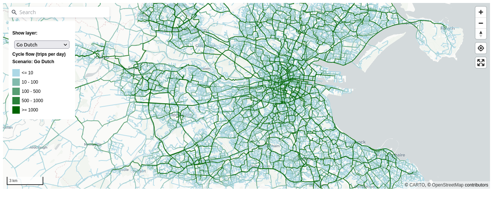
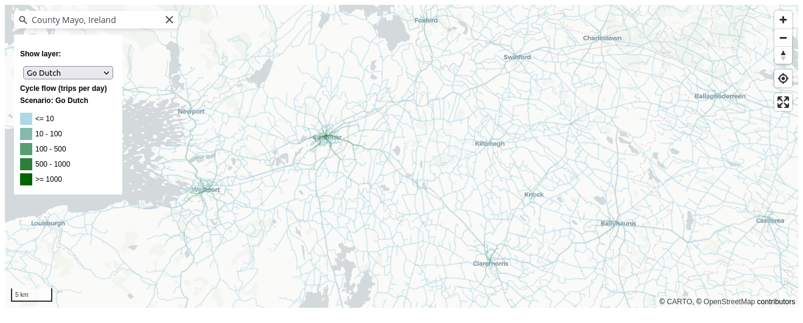
3.2 Additional trip purposes
A limitation of the original PCT was that it only included travel to work data. This was partially addressed by the inclusion of travel to school based on data from the Department for Education in England (Goodman et al., 2019). An advantage of the POWSCAR OD data over OD datasets derived from census surveys in many countries is that it includes travel to school data. We commissioned a version of POWSCAR that included a breakdown of the total flows between OD pairs by purpose and mode, enabling a more realistic estimation of the ‘Baseline’ cycling network.
However, travel to school and work account for less than half (39%) of all trips in Ireland, excluding ‘returning home’ trips, according to the 2022 National Household Travel Survey (NHTS) (National Household Travel Survey 2022, 2022). This represents a substantial decline in the proportion of trips covered by POWSCAR data compared with pre-COVID survey results, with 51% of non-return trips being for work or education according to the 2017 release of the same report (National Travel Survey 2017, 2017). To tackle this issue, we developed a spatial interaction modeling methodology to estimate the number of trips between each OD pair for additional trip purposes. The classification of trip purposes used in the CRUSE Tool was guided mainly by the trip purpose classification found within the National Household Travel Survey (NHTS), but with the addition of categories based on the comprehensive POWSCAR data, and the need to include recreational trips and multi-stage trips. An overview of the trip purposes used in CRUSE is presented in Table 2.
| Trip purpose | Description | Primary source(s) | Confidence |
|---|---|---|---|
| Work (commute) | Commuting to / from workplaces | Census 2016 POWSCAR Data | High confidence - data both origins and destinations for trip purposes |
| Primary Education | Primary school trips | Census 2016 POWSCAR Data, Schools database | High confidence - data both origins and destinations for trip purposes |
| Secondary Education | Secondary school trips | Census 2016 POWSCAR Data, Schools database | High confidence - data both origins and destinations for trip purposes |
| Tertiary Education | Tertiary education trips | Census 2016 POWSCAR Data - Geodirectory categories | High confidence - data both origins and destinations for trip purposes |
| Social | NHTS classification (e.g. restaurants, cinemas, gyms etc.) | Trip rates from NHTS, Geodirectory businesses classified according to relevant NACE codes | Medium confidence |
| Shopping | NHTS classificationfrom supermarkets and shops | Trip rates from NHTS, Geodirectory businesses classified according to relevant NACE codes | Medium confidence |
| Personal / other | Combination of two NHTS classifications, and includes trips to medical, personal services and others | Trip rates from NHTS, Geodirectory businesses classified according to relevant NACE codes | Medium confidence |
| Tourism / recreational | Trips by non-resident visitors to / from visitor attractions | Geodirectory listings for accommodation (origins) and destinations (destinations), Failte Ireland accommodation database, Failte Ireland attraction database | Low confidence - lack of data regarding tourist trip rates |
Following feedback from stakeholders, we added another ‘non-everyday’ trip purpose in an extension phase: cycle tourism. As outlined in the CRUSE Extension report [reference and link to be added on publication], this involved developing an inter-county spatial interaction model to estimate the number of trips between each county for cycle tourism, with trip attractors including campsites and major international transport hubs.
3.3 Routing
Routes in CRUSE are generated by CycleStreets, a not-for profit transport consultancy and web development company who provide application programming interfaces (APIs) supplying a range of datasets for cycle planning and advocacy internationally, including in Ireland. The CycleStreets routing engine is based on OpenStreetMap (OSM) data, which is continuously updated by a global community of volunteers.
While CycleStreets offers a free routing API, we commissioned a custom routing service to enable:
- Calculation of hundreds-of-thousands of routes, which is beyond the terms of service of the free API.
- Making changes to the routing profiles, including allowing routing on trunk roads, which are sometimes avoided in the default routing profiles.
- Control over the version of OSM data being used for the routing, allowing regular updates to the route networks as OSM data is updated.
The CycleStreets routing engine accounts for hilliness and traffic signals, based on substantial experience generating cycle routes for utility and leisure cyclists worldwide. The resulting routes are designed to indicate the route choices of confident, moderately confident, and less confident cyclists with three route options provided for each OD pair as described below. It would be possible to use other routing engines and custom profiles and cost functions in the future, for example to simulate the impact of implementing traffic signals which are optimised for cycling throughput, a feature not currently available in CycleStreets that could be explored in future work.
We computed three route types for each disaggregated (‘jittered’) OD pair: ‘Fastest’, ‘Balanced’ and ‘Quietest’, based on the observation that different cyclists have different preferences for route types and the fastest or shortest path may not be the most heavily used (Desjardins et al., 2022). As outlined on the CycleStreets’ website, the fastest routes minimize journey time, accounting for traffic lights and surface type. The ‘Quietest’ route type minimizes busy sections of road, allowing high ‘diversion factors’ from the fastest route on quieter but less direct ways (often avoiding roads and interactions with motor vehicles altogether where possible). The ‘Balanced’ route type is a compromise between the two, minimizing journey time while avoiding the busiest roads. Allowing users to switch between these three route types enables them to consider the trade-offs between directness and ‘cycle friendliness’ when planning new infrastructure, as shown in Figure 2. These different network maps are available on the ‘Route types’ page for each county (see cruse.bike/kildare/route-types for Kildare, for example). In addition to showing the estimated routes under each scenario, the page also presents summary statistics on the network:
On the fastest network, 25% of the distance cycled occurs in non-hostile segments and 7% in cycle-friendly segments.
Under the baseline scenario, 52% of the distance cycled on the quietest network occurs in non-hostile segments and 15% in cycle-friendly segments.
These statistics can be revealing: in Kildare it suggests that around half of all cycling activity occurs on network segments that are hostile (with a high inferred level of traffic stress), even when efforts are taken to avoid busy segments. For the fastest network, which may be more realistic for utility cycling, the proportion of cycling on hostile segments is even higher at 75%.
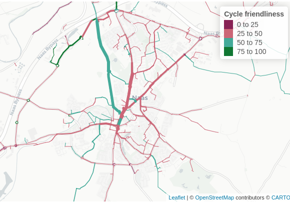
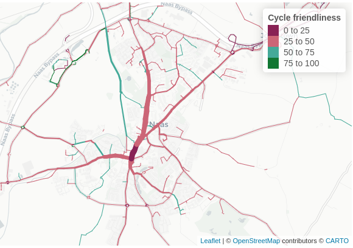
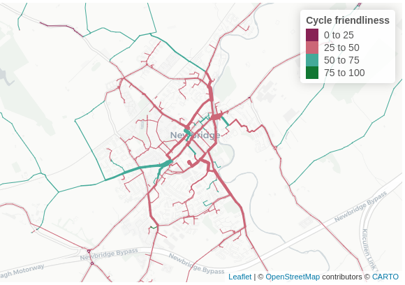
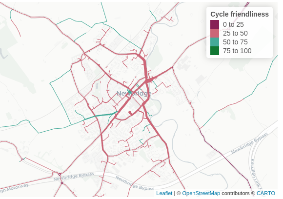
3.4 Scenarios of cycling potential
The datasets outlined above were used to generate estimates of cycling currently (the ‘Baseline’ scenario) and under four scenarios of cycling potential: Near Market, Climate Action Plan, Go Dutch, and Ebike. Each of these scenarios is described below. Figure 3 displays a graph showing the proportion of bicycle trips by distance for Kildare in each scenario.
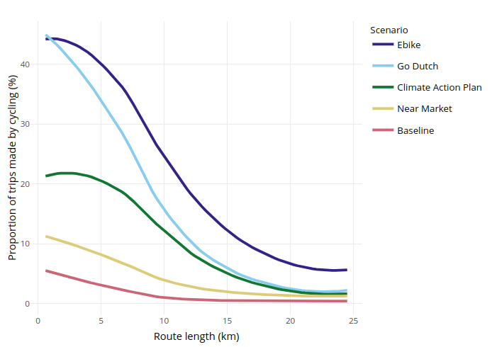
3.4.1 Baseline
The Baseline scenario approximates current cycling levels. As outlined in Section 3.2, the Baseline scenario includes travel to work and school, and additional trip purposes. Cycling levels were taken from the POWSCAR data, which includes the number of people traveling by each mode between each OD pair.
3.4.2 Near Market
The Near Market scenario approximates the level of cycling that would be achieved if levels of cycling uptake observed in areas of Ireland with high levels of cycling according to the 2016 Census were achieved everywhere, accounting for differences in trip distances and hilliness levels. The scenario is implemented as follows:
- Calculate distance decay curves for Dublin for the base year (2016, using POWSCAR data) by fitting a model to the relevant OD data after it has been converted to a route network dataset
- Apply the Near Market model to the hilliness and distance values for each county during the build process
- Add the current level of cycling to the Near Market model
3.4.3 Climate Action Plan
The Climate Action Plan scenario models the transport emissions reductions targeted in the Irish Government’s Climate Action Plan 2021, which aims for a 51% cut in overall GHG emissions by 2030 as part of the pathway to net-zero emissions by 2050. For transport, this includes 500,000 extra walking, cycling and public transport trips per day by 2030. In terms of car travel, the target is to “Increas[e] the proportion of kilometers driven by passenger electric cars to between 40 and 45% by 2030, in addition to a reduction of 10% in kilometers driven by the remaining internal combustion engine cars.” This equates to a 5.5 to 6% reduction in total car km driven.
To model this decrease in car km driven, cycling uptake increases in line with the Go Dutch scenario. However, we only model shift from driving to cycling. There is no shift from other modes of transport to cycling.
3.4.4 Go Dutch
Under the Go Dutch scenario cycling reaches levels equivalent to those found in the Netherlands, taking account of the effects of route hilliness (measured as mean gradient) and route distance. This scenario uses the same model as the PCT, allowing trips to shift from any other mode to cycling (Lovelace et al., 2017).
3.4.5 Ebike
Also based on the PCT scenario with the same name, the Ebike scenario in CRUSE takes Go Dutch cycling uptake, and adds onto this the impact of increased ebike usage, which allows for longer cycle trips. However, travel to primary and secondary schools still uses Go Dutch uptake, since no ebike scenario has been developed for school journeys, and children may be less likely to own ebikes than adults.
3.5 User interface
The CRUSE web application is ‘statically hosted’ rather than ‘dynamically hosted’ (Wickham, 2021). This means the tool does not require a resource-intensive server, reducing hosting costs and the maintenance burden of the tool compared with tools such as the PCT. The use recently-developed web mapping technology makes the tool responsive (Gonçalves, 2023). Open source technologies were used throughout the tool’s user interface, increasing the ease with which people in other countries can build on the open source code. The ‘landing page’ shows the proportion of trips that could be made by cycling under the ‘Go Dutch’ scenario at the county level, highlighting the intended use case for strategic cycle network planning (Figure 4).
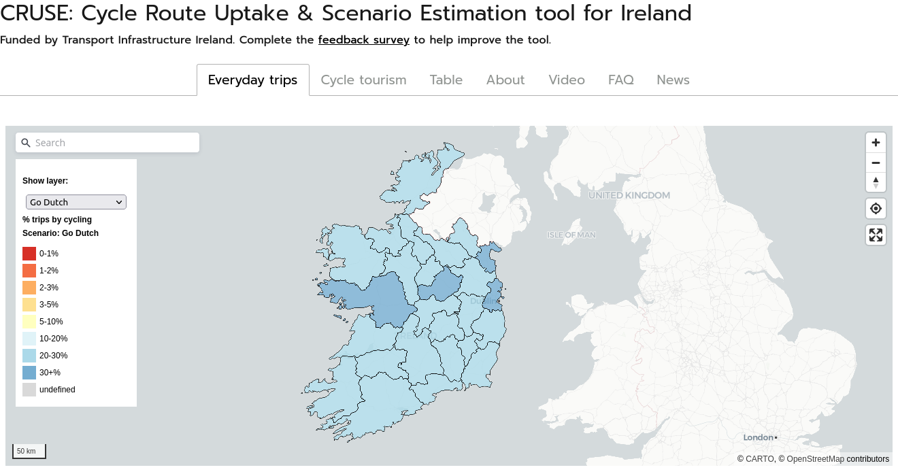
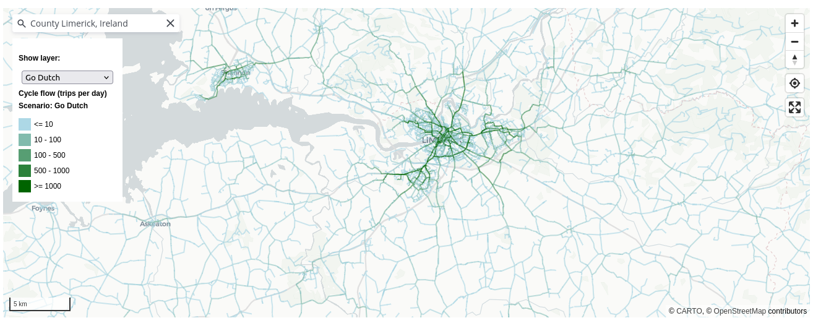
The key results, route network results, are available within an instant by zooming in on the map illustrated in Figure 4: beyond a certain zoom level the network view appears. This differs from the user interface in tools such as the PCT and BiclaR which force users to click on a county before the key network results become visible: to get to the network view in the PCT takes around 10 seconds and multiple clicks, compared with simply zooming in on the landing page for CRUSE.
Other improvements to the user interface in the national map on the landing page include a search bar in the top left and clearer legend for each network visualisation option (users can select any scenario or quietness or gradient depending on their needs). Following feedback from user testing, a ‘geolocate’ and ‘full screen’ button were added in the top right, enabling users to ‘zoom’ to their current location and to focus on the detailed geographic results, as shown in Figure 4.
Typical intended user stories are illustrated in Figure 5, which shows that the tool is designed to be used by both professional and non-professional users. For the main target audience, professional transport planners working at the county level, the tool provides a range of outputs, including estimates of cycling potential at the county and network level. The provision of balanced (the default), quietest and fastest route networks enables planners to consider the trade-offs between directness and ‘cycle friendliness’ when planning new infrastructure. The tool also provides data downloads, enabling estimates of cycling potential on the network to be visualised and analysed with other tools such as QGIS, Python or R.
For non-professional users, the tool provides a simple interface to explore the cycling potential of the network. By providing a single landing page that is suitable for both professional and non-professional users (such as an advocate or parent interested in safe routes to school), the tool aims to facilitate communication between these groups.
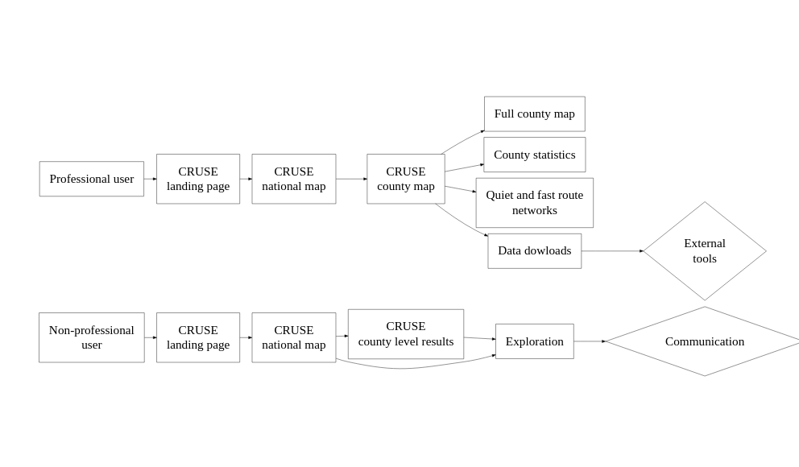
3.6 Stakeholder engagement
The CRUSE Tool was developed for, and in close collaboration with, practitioners in the Republic of Ireland. Although the overall approach of the project was quantitative, stakeholder feedback and qualitative data was deemed essential to ensure the tool was fit for purpose, mitigating against the risk that the project would be ‘technocentric’ and a ‘problem looking for a solution’. From the outset of the project, we aimed to follow a “human-centric approach in which personalization, purpose, ethics and inclusivity are key”, rather than an ‘off-the-shelf’ product that failed to understand, let alone meet, local needs. The ‘digital transformation’ taking place in transport planning (and many other sectors) has the potential to increase existing inequalities (Coppola & Lobo, 2022). A wide range of methods and measure can be taken to ensure that digital tools are accessible.
The stakeholder engagement was carried out through workshops with stakeholders in case study areas, an approach that is documented with reference to participatory development of digital tools for supporting energy transitions (Hewitt et al., 2020). We held a total of three workshops over the course of the project and one open-ended live demo during a 2-day event in Sligo in which we collected feedback from dozens of people. Other than the live demo, all of the workshops took place online.
The first two workshops took place in May 2022, during which the tool was introduced to key staff involved in cycle network planning in Kildare and Limerick counties. The county-specific approach allowed the workshop to focus on specific areas and key corridors. During the workshops, after the tool was introduced and presented, participants were asked questions in a semi-structured interview format, with questions on the evidence they currently have access to, how they may be able to use the tool, and requests for new features. The third and final workshop took place on the 7th December 2023 and included descriptions of recent changes to the tool, with an aim being to get feedback on the new recreational and cycle touring evidence, with representatives from county-level transport planning bodies, Sport Ireland, and Waterways Ireland.
The open-ended live demo was undertaken at a stall at TII’s National Roads and Greenways Conference in Sligo in September 2022, where much of the feedback was verbal and not collected. Much of this feedback from the workshops and live demo outlined above was in the form of ad-hoc comments and suggestions and not all of the qualitative data received was recorded in a structured way, a limitation that we refer back to in Section 5.
4 Results
The main result of the work presented in this paper is an open access web application and datasets on current and potential future cycling levels in Ireland, with evidence provided at county and route segment levels. Like other national tools presented in Table 1, a key feature of the results is that it provides a consistent and objective baseline for comparing cycling potentials in different areas.
The approach generates estimates of cycling potential on every road in the country and are therefore too extensive to present in their entirety in this paper. Through the interactive web application, users can explore the data to generate the results that are most relevant to their needs, whether that is finding the cycling potential on a particular road or finding ‘weak links’ or barriers in the cycle network associated with a particular school, work place or other destination.
Instead of trying to show such use cases, of which there are many hundreds, we present a selection of results to illustrate the main features of the resulting evidence, in Section 4.1. We also present some qualitative results based on workshops with stakeholders in Ireland, in Section 4.2.
4.1 Selected quantitative results
To illustrate the results in urban areas, we explored route networks in the three largest cities in Ireland: Dublin, Cork, and Limerick. Figure 6 shows the ‘fastest’ and ‘quietest’ cycle networks within a 6km wide square centred on each of these cities.
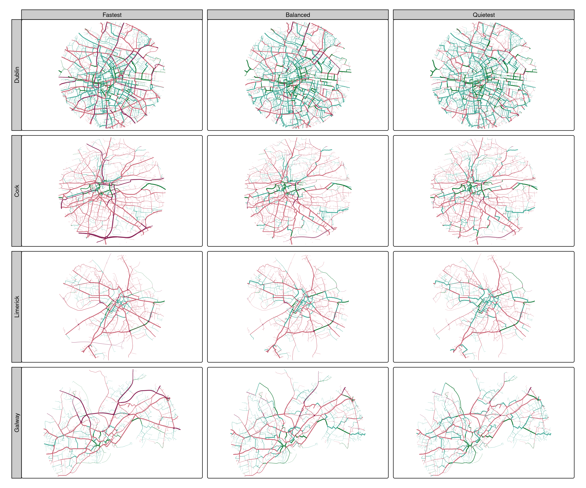
Aside from the varying sizes and route network shapes associated with each city, it is clear from the visualisation of cycling friendliness that none of the cities can be considered to have a ‘complete’ cycle network. Of the three, Dublin has clearly had most investment cycle infrastructure, as shown by the relatively high proportion of the route network that is green in both network types.
Figure 6 highlights the value of generating different network types: looking only at the fastest network it would be hard to differentiate between Cork and Limerick in terms of cycle network quality. However, Limerick clearly has a higher number of quiet routes that can be cycled on for people willing to take a longer route to avoid busy roads: its quiet network (bottom right in Figure 6) contains more green segments than the quietest network for Cork (middle right in Figure 6). The lack of continuous sections of quiet routes in Cork, even in the quietest network, means that people who are less confident cycling cannot avoid mixing with motor traffic for many common trips. In an ideal network, conversely, even the fastest route network would be predominantly cycle friendly, meaning that the most direct and fast routes are also quiet, with low levels of traffic stress.
There are still many parts of the fastest route network, and even some parts of the quietest route networks, that are not cycle friendly and which have high cycling potential, even in Dublin. According to a recent report, 71% of residents in the Dublin Metropolitan Area support “more cycle tracks along roads, physically separated from traffic and pedestrians” (Walking and Cycling Index 2021, 2021). Assuming that these findings apply in other cities, the results can help prioritise where such infrastructure should go: the results presented in Figure 6 should bring attention to where there are wide red lines in fastest and quietest networks, with a reasonable strategy being to prioritise a continuous quiet network first and eventually to ‘cycle proof’ the fastest network also. However, a feature of the approach is that it is not prescriptive and it does not tell planners what to build where; as highlighted below practitioners can use the results in a variety of ways.
4.2 Stakeholder feedback
The feedback from the workshops was generally positive, with stakeholders commenting on the need for the tool, lack of data on cycling potential proving a barrier to decision-making and investment, and the potential for the tool. At an end of project workshop in December 2023, stakeholders were asked to provide feedback on the tool and its potential use in practice. Quotes and suggestions from these workshops, and a subsequent interview with a transport planner using the evidence in their everyday work in Transport Infrastructure Ireland, are presented in this section (with quotes being attributed to named individuals where permission has been granted).
Early in the project, we presented the approach to practitioners in Kildare and Limerick. The feedback from the workshop in Kildare highlighted the need for the tool for practitioners at the county level, as highlighted in the following quote:
“It’s a missing piece of evidence that will help new projects get built” (Dónal Hodgins, Senior Engineer, Sustainable Transport & Traffic Management, Kildare County Council)
Practitioners in Kildare County Council found that the evidence generated was already valuable for the development of new cycle routes, especially when making the case during planning applications. They emphasized that cycle networks are often fragmented, and the tool allows them to demonstrate how individual local schemes can contribute to a larger, interconnected network. An unexpected piece of feedback from the workshop was the preference for visualizations that directly compare the fast and quiet routes, as they recognize the importance of both types of routes. In response to this we provided the ‘Route types’ page for each county, although this functionality is not available in the landing page map due to other feedback requesting a simpler interface. In comparison with another tool for transport planning, CRUSE was seen by practitioners in Kildare as more user-friendly. They found the evidence at the route level (unavailable in other tools) crucial for planning new cycling infrastructure. Overall, the workshop participants concluded that the approach filled gap in evidence and will greatly assist in the development of new cycling projects.
During the workshop with practitioners in Limerick, the estimates of Baseline and Go Dutch potential at the network levels were found to match well with local knowledge. The tool effectively highlighted the same sections on the transport network that experienced planners identified as priorities for investment in cycling, such as the South Circular Road. Limerick County Council expressed their interest in utilizing each network layer, particularly the quiet network, to support new cyclists who lack confidence to share space with motor traffic. Specific suggestions from the workshop included the suggestion to align scenarios with national strategy (resulting in the Climate Action Plan scenario) and to provide data downloads provided as ‘Shapefiles’ for further analysis (now implemented although the download format is GeoPackage, an open standard for spatial data).
In a subsequent interview with a practitioner using the evidence generated by the CRUSE approach in their everyday work, we received the following feedback. The outputs were found to be a “useful tool for getting schemes started; and provides good detail to supplement the strategic rationale for intervention within Project Outline Documents, via the cycle friendliness maps and the baseline / near market cyclist estimates”. As a result, the CRUSE tool “is ideal for generating a strategic rationale for estimating demand and building the business case in the absence of cycle count data; it is also very useful at the detailed design stage and the CRUSE estimates can (and have been used) to supplement the economic appraisal of cycling schemes” (Declan Keenan, Senior Transport Planner TII working on active travel, personal communication). Declan also noted a strong alignment in the South Dublin area between cycle count data, and the outputs of the approach: “It’s forms a strong representation of what’s going on in the areas where TII have collated some cycling count data, e.g. in the vicinity of the M50 in the areas of Ballinteer and Sandyford. Some additional network checking against count data would also be useful, to ensure good representation across other settlements.” Where cycling data is available, the networks align well in terms of network “shape” and the proportion of trips on different parts of the network.
There were two suggestions from Declan which have not yet been implemented: the provision of data showing POWSCAR and recreational estimates/data separately, and the need for training on the tool to ensure that all staff can use it effectively. These, and other potential improvements, are discussed in the next section.
5 Discussion
The aim of the paper was to describe the design, features and potential use of the ‘CRUSE’ approach and resulting tool. As outlined in the previous section, the CRUSE Tool provides evidence on current and potential future cycling levels across Ireland down to the street level, with potential assigned to fastest, balanced and quietest route networks. This provision of multiple scenarios of behavior change and multiple scenarios of investment, for example in cycling infrastructure next to major roads vs quiet residential streets, is a key feature of the CRUSE Tool.
5.1 Uses of the tool in practice
As highlighted in a paper on cycling infrastructure preferences based on a case study of Dublin, both directness and quietness are important (Caulfield et al., 2012):
Direct routes with short journey times were found to be the most important positive variable for existing cyclists and non-cyclists in determining route choice. This is followed by infrastructure type, the number of junctions along the route, traffic speed and cyclist volumes. In terms of infrastructure, regardless of the level of cycling confidence, routes which have ‘no facilities’ or ‘bus/cycle lanes’ are the least favoured cycle route types.
The CRUSE Tool can help both in terms of describing the current situation, and also prioritise investment in those direct routes with high cycling potential that lack adequate cycling infrastructure (Caulfield et al., 2012). It will also support reporting for the RISM Directive on road casualties as part of the road safety management system.
5.2 Comparison with other tools and contribution to the field
While the CRUSE approach presented in this paper is not the first national and publicly available tool for cycling planning, it has some key features that make it relevant for other countries, regions and road authorities tasked with making their transport systems safe and sustainable:
- Compared with the Propensity to Cycle Tool (PCT), which provides either travel to work (Lovelace et al., 2017) or to school cycling networks (Goodman et al., 2019), the approach presented here captures a higher proportion of cycling potential including key rural trips which are often under-represented in models of active travel.
- The results are open access meaning that any stakeholder in the planning system can access the evidence. This will help to democratize the transport planning process and make wider conversations about transport planning more evidence-based and less polarized (Lovelace et al., 2020), something that is particularly relevant given the potentially polarizing nature of pro-cycling interventions (Wild et al., 2017).
- The results are fully reproducible (code to be released pending sign-off by TII’s IT team), preventing ‘cloud lock in’ to a potentially monopolistic consultancy, and encouraging input from the wider open source community (Dhir & Dhir, 2017; Lovelace, 2021).
- The tool has a user interface that allows people to see the key results quickly, without having to click on regional result pages, as is the case with the BiclaR and PCT projects.
As the benefits of strategic planning for cycling become more apparent (Scappini et al., 2022), we expect the demand for the approach outlined in this paper, and resulting tools, to grow. However, the approach is not without limitations and does not meet all requirements in Ireland or indeed any country where the methods are applied.
5.3 Limitations and future research
The approach has a number of limitations that should be understood by practitioners, researchers, advocates, policy makers using the tool. As highlighted in Section 4.2, we were only able to compare the results with a small number of cycle counters and based on feedback from workshops. As outlined in the CRUSE extension report [reference to be added on publication], we also undertook validation against Strava data. However, more data is needed to better understand the accuracy of the baseline results, especially for the ‘non-POWSCAR’ purposes. We hope this becomes possible as Ireland’s cycle counter network expands, allowing refinements to the approach (espcially the spatial interaction model and parameters) to be made. Changes that could help mitigate this limitation on the user interface side include providing results with confidence intervals or as categories of cycling potential, rather than as central estimates, and the visualistion of the ‘POWSCAR’ network (which is based on Census data) in the web application.
A limitation associated with the approach is its reliance on OpenStreetMap (OSM) data. The ‘cycle friendliness’ of a route is based on the OSM tags and the routes themselves are generated by the CycleStreets routing engine, which is based on OSM data. During a conference in Sligo where we presented prelimary results, a stakeholder with local knowledge pointed out that a quiet route along the canal was not being followed. In response, manual edits were made to the OSM network, and the results currently on the website reflect these changes. However, there are many other potential errors in the OSM data that have not been corrected. Future work could mitigate this by integrating the approach more closely with OSM (for example by providing links to enable one-click edits of OSM when users click on a route segment) or by setting up a workshop to ‘crowdsource’ corrections to the OSM data. Furthermore, because there are multiple possible users of the tool with different starging points, workshops and training events could be valuable if not essential to ensure that the tool is used effectively. Such events could bring together stakeholders from advocacy groups, local authorities, and national governments. The siloed nature of transport planning means that such diverse stakeholders are rarely the same room, meaning that a ‘wide boundary’ outcome of the tool could be to bring these groups together (if workshops based on the tool are successful).
Another limitation of the approach is that the results are ‘static’, reducing its ability to support monitoring of growth in cycling, upgrades of existing cycling infrastructure and dynamic (year-by-year) exposure information to estimate crash rates. Exposure information is a key part of the the European RISM Directive, for reporting collision rates of vulnerable road users by 2024. Regular updates to the model to generate yearly baseline cycle flow estimates could tackle this limitation, although would take substantial resources.
More broadly, the tool’s outputs are limited to just one mode of active travel (cycling), ignoring walking and wheeling, including wheelchair use and a range of wheeled devices such as scooters, bike trailers and e-cargo bikes that can be used to escort children to school. Sustainable transport policies should plan for walking, wheeling and cycling, and there are many co-benefits of broadly defined active travel interventions that benefit all active modes, such as measures to reduce heavy motor traffic speeds and volumes in areas and along corridors with high active travel potential. This raises the question of whether other active modes should be incorporated into the results using the OD-based approach outlined in this paper, or whether different modeling approaches are needed to properly capture the shorter distance trips typically made by walking (Cooper, 2018). Furthermore, the estimates of cycling presented in the CRUSE Tool omit multi-modal trips including public transport, and omit trip chaining, due to the need to capture a large portion of cycling potential within the resource constraints of the project.
A final limitation of the approach relates to how it was developed. As described in Section 3.6, the development of the tool was participatory, but only insofar as people who attended our workshops could provide feedback. The people who did provide feedback were deliberately chosen as the target audience. In future work we would like to collect feedback from a wider range of people, including campaigners, service providers (e.g. staff involved in travel planning for schools and new developments), and groups who are under-represented in transport planning processes.
6 Conclusions
The CRUSE Tool is an open access web application for strategic cycle network planning and prioritization of road safety interventions across Ireland. Building on previous work, it provides a nationally consistent evidence base, providing valuable insights to planners and other stakeholders in the transport planning process, at national and local levels. Because the results are available at the route segment level, the tool can be used to identify ‘weak links’ in the cycle network (Vybornova et al., 2022), and to prioritize investment in cycling infrastructure to maximize health, equality, and other benefits (Mahfouz et al.; Woodcock et al., 2021). Furthermore, the provision of the evidence in a free and publicly available website, hosted at cruse.bike, means that it can be used by anyone, encouraging wider participation and more evidence-based debate about transport planning.
A key feature of the project methodologically is its calculation of current and future potential not only for travel to work and travel to school, but also for other trip purposes, including recreational trips. This required the development of spatial interaction models and estimation of the relative attractiveness of different destinations for different trip purposes, an area of active research where new developments could be incorporated into the tool in future (Hasova et al., 2022).
As outlined in Section 4.2, the tool is already used in practice to support more ambitious and data-driven planning for safe cycling routes in multiple counties across Ireland. We hope that the underlying approach provides a basis for future research and development. In combination with broader sustainable mobility measures and policies to reduce motor traffic speeds and volumes, evidence generated by the approach outlined in this paper can support the fast and fair decarbonisation of transport systems worldwide.
7 List of abbreviations
APIs: Application Programming Interfaces
CSO: Central Statistics Office
CRUSE: Cycle Route Uptake and Scenario Estimation
ED: Electoral Division
GHG: Greehouse Gas
GTFS: General Transit Feed Specification
KSI: Killed and Seriously Injured
NRA: National Road Authority
NRN: National Road Network
OD: Origin-Destination, typically referring to origin-destination data which contains information on the number of people traveling between each pair of zones
OSM: Open Street Map
PCT: Propensity to Cycle Tool
POWSCAR: Place of Work, School or College Census of Anonymized Records
TII: Transport Infrastructure Ireland
8 Declarations
Availability of data and material
Data was obtained from the Central Statistics Office (CSO) and Transport Infrastructure Ireland (TII) under license and cannot be shared publicly. The code used to generate the results presented in this paper is fully reproducible and available at [to be added post review.]
Funding
This work was funded by Transport Infrastructure Ireland (TII).
Acknowledgements
[To be added post review.]
References
Anable, J., & Goodwin, P. (2019). Transport and mobility. CREDS. https://www.creds.ac.uk/publications/shifting-the-focus-4-transport-mobility/
Barmentlo, H. (2012). Development of a planning support system for public transport rationalization in Kigali, Rwanda. http://essay.utwente.nl/62252/
Bencekri, M., Ku, D., Lee, D., & Lee, S. (2023). A Planning Support System for Boosting Bikeability in Seoul (R. Goodspeed, R. Sengupta, M. Kyttä, & C. Pettit, Eds.; pp. 149–171). Springer Nature Switzerland. https://doi.org/10.1007/978-3-031-31746-0_9
Bencekri, M., Lee, D., Ku, D., & Lee, S. (2024). A planning support system for boosting walkability. Proceedings of the Institution of Civil Engineers - Municipal Engineer, 1–14. https://doi.org/10.1680/jmuen.23.00040
Brand, C., Dons, E., Anaya-Boig, E., Avila-Palencia, I., Clark, A., Nazelle, A. de, Gascon, M., Gaupp-Berghausen, M., Gerike, R., & Gotschi, T. (2020). The climate change mitigation effects of active travel. Preprint: Researchsquare.com.
Brick, E., & Swift, C. (2018). Ex-post evaluation of smarter travel areas. https://assets.gov.ie/40421/04d2d97e6c834470800a1f394967a610.pdf
Burns, L. D. (2013). Sustainable mobility: A vision of our transport future. Nature, 497(7448), 181182. http://dx.doi.org/10.1038/497181a 10.1038/497181a
Caulfield, B., Brick, E., & McCarthy, O. T. (2012). Determining bicycle infrastructure preferences A case study of Dublin. Transportation Research Part D: Transport and Environment, 17(5), 413–417. https://doi.org/10.1016/j.trd.2012.04.001
Cavallaro, F., & Nocera, S. (2024). COVID-19 effects on transport-related air pollutants: Insights, evaluations, and policy perspectives. Transport Reviews, 44(2), 484–517. https://doi.org/10.1080/01441647.2023.2225211
Climate Action Plan 2023. (2022). https://www.gov.ie/en/publication/7bd8c-climate-action-plan-2023/
Cooper, C. H. V. (2018). Predictive spatial network analysis for high-resolution transport modeling, applied to cyclist flows, mode choice, and targeting investment. International Journal of Sustainable Transportation, 0(0), 1–11. https://doi.org/10.1080/15568318.2018.1432730
Coppola, P., & Lobo, A. (2022). Inclusive and collaborative advanced transport: are we really heading to sustainable mobility? European Transport Research Review, 14(1), 46. https://doi.org/10.1186/s12544-022-00570-1
Cunha, I., & Silva, C. (2023). Assessing the equity impact of cycling infrastructure allocation: Implications for planning practice. Transport Policy, 133, 15–26. https://doi.org/10.1016/j.tranpol.2022.12.021
Desjardins, E., Higgins, C. D., Scott, D. M., Apatu, E., & Páez, A. (2022). Correlates of bicycling trip flows in Hamilton, Ontario: fastest, quietest, or balanced routes? Transportation. https://doi.org/10.1007/s11116-021-10197-1
Dhir, S., & Dhir, S. (2017). Adoption of open-source software versus proprietary software: An exploratory study. Strategic Change, 26(4), 363–371. https://doi.org/10.1002/jsc.2137
Directive 2008/96/EC of the European Parliament and of the Council of 19 November 2008 on road infrastructure safety management. (2008). http://data.europa.eu/eli/dir/2008/96/oj/eng
Félix, R., Lovelace, R., & Moura, F. (2022). biclaR - Ferramenta de apoio ao planeamento da rede ciclável na área metropolitana de Lisboa. CERIS - Instituto Superior Técnico and Transportes Metropolitanos de Lisboa. https://biclar.tmlmobilidade.pt
Geertman, S. (2002). Participatory Planning and GIS: A PSS to Bridge the Gap. Environment and Planning B: Planning and Design, 29(1), 21–35. https://doi.org/10.1068/b2760
Geertman, S., & Stillwell, J. (2009). Planning support systems: Content, issues and trends (S. Geertman & J. Stillwell, Eds.; Vol. 95, p. 126). Springer Netherlands. http://dx.doi.org/10.1007/978-1-4020-8952-7_1
Gehrke, S. R., Akhavan, A., Furth, P. G., Wang, Q., & Reardon, T. G. (2020). A cycling-focused accessibility tool to support regional bike network connectivity. Transportation Research Part D: Transport and Environment, 85, 102388. https://doi.org/10.1016/j.trd.2020.102388
Global Status Report On Road Safety 2018. (2018). https://www.who.int/publications/i/item/9789241565684
Gonçalves, A. P. (2023). Map Services Management [PhD thesis]. https://recipp.ipp.pt/handle/10400.22/24086
Goodman, A., Rojas, I. F., Woodcock, J., Aldred, R., Berkoff, N., Morgan, M., Abbas, A., & Lovelace, R. (2019). Scenarios of cycling to school in england, and associated health and carbon impacts: Application of the ‘propensity to cycle tool’. Journal of Transport and Health, 12, 263–278. https://doi.org/10.1016/j.jth.2019.01.008
Gray, D., Farrington, J., Shaw, J., Martin, S., & Roberts, D. (2001). Car dependence in rural scotland: Transport policy, devolution and the impact of the fuel duty escalator. Journal of Rural Studies, 17(1), 113125. https://doi.org/10.1016/S0743-0167(00)00035-8
Greater dublin area transport strategy. (n.d.). https://www.nationaltransport.ie/planning-and-investment/strategic-planning/greater-dublin-area-transport-strategy/
Hasova, L., Tranos, E., & Wolf, L. J. (2022). Form and function in spatial interaction: A new approach to spatial structure. https://lenkahas.com/files/preprint.pdf
Hewitt, R. J., Boer, C. de, & Flacke, J. (2020). Participatory development of digital support tools for local-scale energy transitions: Lessons from two european case studies. Global Transitions, 2, 138–149. https://doi.org/10.1016/j.glt.2020.07.003
Jaramillo, P., Kahn Ribeiro, S., Newman, P., Dhar, S., Diemuodeke, O. E., Kajino, T., Lee, D. S., Nugroho, S. B., Ou, X., Hammer Strømman, A., & Whitehead, J. (2022). Transport (P. R. Shukla, J. Skea, R. Slade, A. A. Khourdajie, R. van Diemen, D. McCollum, M. Pathak, S. Some, P. Vyas, R. Fradera, M. Belkacemi, A. Hasija, G. Lisboa, S. Luz, & J. Malley, Eds.). Cambridge University Press. https://www.ipcc.ch/report/ar6/wg3/downloads/report/IPCC_AR6_WGIII_Chapter10.pdf
Larsen, J., Patterson, Z., & El-Geneidy, A. (2013). Build It. But Where? The Use of Geographic Information Systems in Identifying Locations for New Cycling Infrastructure. International Journal of Sustainable Transportation, 7(4), 299–317. https://doi.org/10.1080/15568318.2011.631098
Lopes, M., Mélice Dias, A., & Silva, C. (2021). The impact of urban features in cycling potential – A tale of Portuguese cities. Journal of Transport Geography, 95, 103149. https://doi.org/10.1016/j.jtrangeo.2021.103149
Lovelace, R. (2016). Mapping out the future of cycling. Get Britain Cycling, 5, 2224. http://eprints.whiterose.ac.uk/100080/
Lovelace, R. (2021). Open source tools for geographic analysis in transport planning. Journal of Geographical Systems. https://doi.org/10.1007/s10109-020-00342-2
Lovelace, R., Goodman, A., Aldred, R., Berkoff, N., Abbas, A., & Woodcock, J. (2017). The Propensity to Cycle Tool: An open source online system for sustainable transport planning. Journal of Transport and Land Use, 10(1). https://doi.org/10.5198/jtlu.2016.862
Lovelace, R., Parkin, J., & Cohen, T. (2020). Open access transport models: A leverage point in sustainable transport planning. Transport Policy, 97, 47–54. https://doi.org/10.1016/j.tranpol.2020.06.015
Mahfouz, H., Lovelace, R., & Arcaute, E. Road segment prioritization for bicycle infrastructure. arXiv. https://arxiv.org/abs/2105.03712
Mattsson, K., Lima, J. A. de, Wilkinson, T., Järlskog, I., Ekstrand, E., Sköld, Y. A., Gustafsson, M., & Hassellöv, M. (2023). Tyre and road wear particles from source to sea. Microplastics and Nanoplastics, 3(1), 14. https://doi.org/10.1186/s43591-023-00060-8
Motte-baumvol, B., Massot, M.-H. M. M.-H., & Byrd, A. M. A. A. M. (2010). Escaping car dependence in the outer suburbs of paris. Urban Studies, 47(3), 604619. https://doi.org/10.1177/0042098009349773
National Development Plan 2021-2030. (2021). https://www.gov.ie/en/publication/774e2-national-development-plan-2021-2030/
National household travel survey 2022. (2022). https://www.nationaltransport.ie/publications/national-household-travel-survey-2022/
National roads 2040. (2023). https://www.tii.ie/tii-library/strategic-planning/national-roads-2040/TII-NR2040-Final-Report-EN-April-2023.pdf
National travel survey 2017. (n.d.). https://www.nationaltransport.ie/wp-content/uploads/2019/01/National_Household_Travel_Survey_2017_Report_-_December_2018.pdf
National travel survey 2017. (2017). https://www.nationaltransport.ie/wp-content/uploads/2019/01/National_Household_Travel_Survey_2017_Report_-_December_2018.pdf
Nello-Deakin, S. (2020). Environmental determinants of cycling: Not seeing the forest for the trees? Journal of Transport Geography, 85, 102704. https://doi.org/10.1016/j.jtrangeo.2020.102704
Parkin, J. (2018). Designing for cycle traffic: International principles and practice. ICE Publishing. https://www.icevirtuallibrary.com/isbn/9780727763495
Parkin, J., Wardman, M., & Page, M. (2007). Estimation of the determinants of bicycle mode share for the journey to work using census data. Transportation, 35(1), 93–109. https://doi.org/10.1007/s11116-007-9137-5
Phillips, L., & Range, A. (2017). Development of a GIS based toolbox for mapping Cycling Potential across Scotland. https://www.starconference.org.uk/star/2017/Philips.pdf
Rosenow, J. (2022). Europe on the way to net zero: What challenges and opportunities? PLOS Climate, 1(7), e0000058. https://doi.org/10.1371/journal.pclm.0000058
Scappini, B., Zucca, V., Meloni, I., & Piras, F. (2022). The regional cycle network of sardinia: Upgrading the accessibility of rural areas through a comprehensive island-wide cycle network. European Transport Research Review, 14(1), 10. https://doi.org/10.1186/s12544-022-00533-6
Shergold, I., Parkhurst, G., & Musselwhite, C. (2012). Rural car dependence: An emerging barrier to community activity for older people. Transportation Planning and Technology, 35(1), 6985.
Silva, C., Lopes, M., & Mélice Dias, A. (2022). Revealing the strength of gross potential for cycling as a planning support for starter cycling cities. Case Studies on Transport Policy, 10(1), 539–548. https://doi.org/10.1016/j.cstp.2022.01.014
Silva, C., Marques, J. S., Lopes, M., & Dias, A. M. (2021). The Gross Potential for Cycling: Planning for human scale urban mobility. In Transport in Human Scale Cities (pp. 157–168). Edward Elgar Publishing. https://www.elgaronline.com/edcollchap-oa/edcoll/9781800370500/9781800370500.00024.xml
Tait, C., Beecham, R., Lovelace, R., & Barber, S. (2023). Contraflows and cycling safety: Evidence from 22 years of data involving 508 one way streets. Accident Analysis and Prevention, 179, 106895. https://doi.org/10.1016/j.aap.2022.106895
Transport for London. (2010). Analysis of Cycling Potential. https://content.tfl.gov.uk/analysis-of-cycling-potential.pdf
Vybornova, A., Cunha, T., Gühnemann, A., & Szell, M. (2022). Automated detection of missing links in developed bicycle networks. arXiv:2201.03402 [Physics]. http://arxiv.org/abs/2201.03402
Walking and Cycling Index 2021: Dublin Metropolitan Area. (2021).
Welch, D., Shepherd, D., Dirks, K. N., & Reddy, R. (2023). Health effects of transport noise. Transport Reviews, 43(6), 1190–1210. https://doi.org/10.1080/01441647.2023.2206168
Wickham, H. (2021). Mastering shiny: Build interactive apps, reports, and dashboards powered by r. O’Reilly Media.
Wild, K., Woodward, A., Field, A., & Macmillan, A. (2017). Beyond ‘bikelash’: Engaging with community opposition to cycle lanes. Mobilities, 1–15. https://doi.org/10.1080/17450101.2017.1408950
Winkler, L., Pearce, D., Nelson, J., & Babacan, O. (2023). The effect of sustainable mobility transition policies on cumulative urban transport emissions and energy demand. Nature Communications, 14(1), 2357. https://doi.org/10.1038/s41467-023-37728-x
Winters, M., Brauer, M., Setton, E. M., & Teschke, K. (2013). Mapping bikeability: A spatial tool to support sustainable travel. Environment and Planning B: Planning and Design, 40(5), 865–883. https://doi.org/10.1068/b38185
Winters, M., Teschke, K., Brauer, M., & Fuller, D. (2016). Bike Score®: Associations between urban bikeability and cycling behavior in 24 cities. International Journal of Behavioral Nutrition and Physical Activity, 13(1), 18. https://doi.org/10.1186/s12966-016-0339-0
Woodcock, J., Abbas, A., Ullrich, A., Tainio, M., Lovelace, R., Sá, T. H., Westgate, K., & Goodman, A. (2018). Development of the Impacts of Cycling Tool (ICT): A modelling study and web tool for evaluating health and environmental impacts of cycling uptake. PLOS Medicine, 15(7), e1002622. https://doi.org/10.1371/journal.pmed.1002622
Woodcock, J., Aldred, R., Lovelace, R., Strain, T., & Goodman, A. (2021). Health, environmental and distributional impacts of cycling uptake: The model underlying the Propensity to Cycle tool for England and Wales. Journal of Transport and Health, 22, 101066. https://doi.org/10.1016/j.jth.2021.101066
Zhang, D., Magalhães, D. J. A. V., & Wang, X. (Cara). (2014). Prioritizing bicycle paths in Belo Horizonte City, Brazil: Analysis based on user preferences and willingness considering individual heterogeneity. Transportation Research Part A: Policy and Practice, 67, 268–278. https://doi.org/10.1016/j.tra.2014.07.010